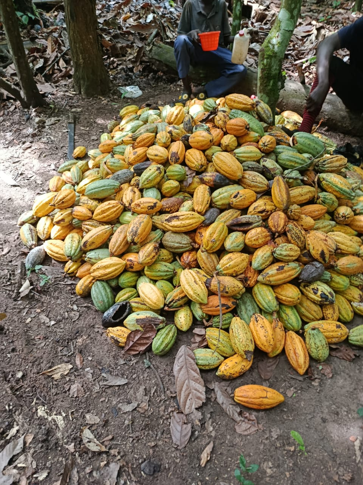

Okra & Plantain Production
Our core Okra and Plantain blocks are managed for optimal yield, with Okra cycles designed for quick returns and Plantain cultivation supporting long-term income.
We manage a comprehensive portfolio of Okra, Plantain, Cocoa, and Palm Tree farming with professional cultivation practices, dedicated field supervision, harvest support, and complete investor transparency.
Our core Okra and Plantain blocks are managed for optimal yield, with Okra cycles designed for quick returns and Plantain cultivation supporting long-term income.

Our expanding Cocoa and Palm Tree sections provide diversified agricultural returns with professional cultivation practices and dedicated management supervision.

See some of our farming operations.
Our farm operations are built on professional management of diversified crops—Okra, Plantain, Cocoa, and Palm Trees. Each crop is managed according to proven agricultural practices, with transparent reporting, dedicated supervision, and full investor oversight at every stage.